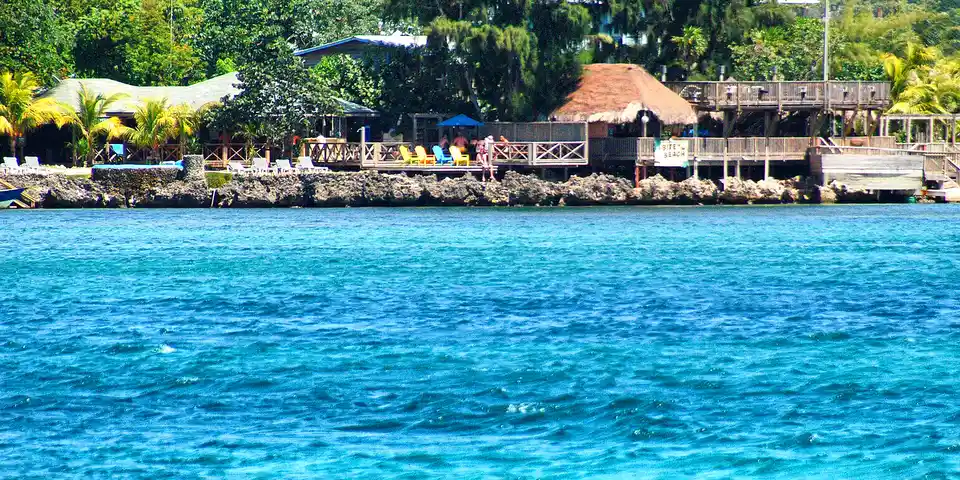

Central America & Caribbean
Honduras on a budget
Cheap Caribbean diving and Mayan ruins, best kept to the well-traveled route between Copán and the Bay Islands. Check current travel advice before going.
Photo: Talk2winik, Public domain, via Wikimedia Commons

Classic route
Copán Ruinas from Guatemala, then across to Utila. 10 days.
Before you go
Flights to Utila: Skyscanner · Kiwi.com · Google Flights
Hostels and guesthouses in Utila · Copán Ruinas · Roatán · Lago de Yojoa
Tours and tickets: Utila · Copán Ruinas
Mobile data: Honduras eSIM
Travel insurance: SafetyWing
How much 12 places in Honduras cost
Daily budgets per person in US dollars: a hostel dorm or simple guesthouse, local food, local transport and the usual entry fees.
-
Utila
One of the cheapest places in the world to learn to dive, with coral reefs and whale sharks in season.
Bed $12 · Food $10 · Getting around $2 · Extras $25
Budget tip: Dive shops often include free dorm nights with a course, so compare packages before signing up.
$49per day -
Copán Ruinas
Intricately carved Mayan stelae, a hieroglyphic stairway and a macaw sanctuary next to a cobbled colonial town.
Bed $12 · Food $8 · Getting around $3 · Extras $10
Budget tip: An easy shuttle ride from Antigua, Guatemala. Check current travel advice for elsewhere in the country.
$33per day -
Roatán
The largest Bay Island, with easy shore diving off West End, colorful reef fish and the soft white sand of West Bay.
Bed $20 · Food $13 · Getting around $3 · Extras $30
Budget tip: Water taxis between West End and West Bay are cheap. If you want a dive course, Utila is usually less expensive.
$66per day -
Lago de Yojoa
Birdwatching, coffee farms, the thundering Pulhapanzak waterfall and a lakeside craft brewery with cheap rooms.
Bed $12 · Food $8 · Getting around $3 · Extras $5
Budget tip: Reach Pulhapanzak by local bus and walk behind the falls with a guide from the entrance.
$28per day -
Comayagua
Former colonial capital with a whitewashed cathedral housing one of the oldest working clocks, and intricate Holy Week sawdust carpets.
Bed $12 · Food $8 · Getting around $3 · Extras $3
Budget tip: Easy stop between San Pedro Sula and Tegucigalpa; museums and the cathedral tower have small entry fees, ideal for a half-day visit.
$26per day -
Gracias
A colonial Lenca town of cobbled streets below the cloud forest of Celaque National Park, with hot springs just outside town.
Bed $12 · Food $8 · Getting around $3 · Extras $4
Budget tip: Hike Celaque, the country's highest peak, from the park campsite. Shared mototaxis reach the hot springs cheaply.
$27per day -
Valle de Ángeles
Colonial mountain village near Tegucigalpa, known for woodwork, leather crafts and pine forest walks in La Tigra National Park.
Bed $14 · Food $9 · Getting around $3 · Extras $2
Budget tip: Visit as a day trip by bus from Tegucigalpa; weekdays are quieter and handicraft shops are more willing to bargain.
$28per day -
Tela
Caribbean beach town with Garifuna villages, Lancetilla botanical garden and boat trips into Punta Sal and Jeannette Kawas park.
Bed $14 · Food $9 · Getting around $3 · Extras $8
Budget tip: Join group boat trips to Punta Sal to cut costs; Lancetilla is reachable by bike from town.
$34per day -
Pico Bonito
Rainforest trails, swimming holes, waterfalls and whitewater rafting on the Río Cangrejal, a short ride from La Ceiba.
Bed $15 · Food $9 · Getting around $4 · Extras $15
Budget tip: Stay at a budget lodge on the Cangrejal road and hike to the waterfalls without a guide.
$43per day -
Cayos Cochinos
Marine-protected cays with Garifuna fishing villages, coral reefs and clear water, reached by boat from the mainland coast.
Bed $25 · Food $12 · Getting around $15 · Extras $20
Budget tip: Day trips from La Ceiba bundle boat, lunch and park fees; staying overnight at Chachahuate village is possible with basic facilities.
$72per day -
Guanaja
Least developed of the Bay Islands, with stilt-house Bonacca town, pine-covered hills and quiet reefs for diving and snorkeling.
Bed $30 · Food $15 · Getting around $8 · Extras $25
Budget tip: Fewer budget beds than Utila, so book ahead; water taxis are the main transport and are cheaper shared with others.
$78per day -
La Moskitia
Roadless rainforest region of Miskito villages and the Río Plátano Biosphere Reserve, reached by small plane or boat.
Bed $20 · Food $10 · Getting around $40 · Extras $20
Budget tip: Travel only with a reputable local operator; trips are costly due to flights and boats, so join a group departure to split expenses.
$90per day
Know before you go
Honduras on a budget: the basics
Currency
$1 = 26.90 HNL
Honduran lempira
| Dollars to HNL | HNL to dollars | ||
|---|---|---|---|
| $1 | 26.90 HNL | 10 HNL | $0.372 |
| $5 | 134 HNL | 50 HNL | $1.86 |
| $10 | 269 HNL | 100 HNL | $3.72 |
| $20 | 538 HNL | 500 HNL | $18.59 |
| $50 | 1,345 HNL | 1,000 HNL | $37.18 |
| $100 | 2,690 HNL | 5,000 HNL | $186 |
A typical day here (about $49) is roughly 1,300 HNL.
Mid-market rate on 2026-10-05. Cash machines and exchange desks pay a little less.
Getting around
Shuttles connect Antigua in Guatemala with Copán Ruinas, and Hedman Alas runs comfortable buses on the main routes. The ferry from La Ceiba to Utila runs daily, and Uber works in Tegucigalpa and San Pedro Sula. Try to travel by day and use direct first-class buses rather than local ones in big cities.
Where to sleep
Copán Ruinas has cheap hostels and guesthouses, and on Utila many dive shops include a dorm bed or discounted room with a course.
What to eat
- Baleada: flour tortilla folded over refried beans, cheese and cream
- Sopa de caracol: conch soup in coconut milk from the north coast
- Plato típico: grilled beef with beans, plantain, cheese and tortillas
- Tajadas: crispy fried green plantain slices, often with cabbage
Money
Carry lempiras in cash for small places, as cards are mostly taken at hotels and dive shops, and US dollars are accepted on Utila. Tipping about 10% in restaurants is normal.
Phone data
Tigo and Claro SIMs are cheap and easy to buy, and coverage is good in Copán and on Utila but weak in remote areas.
Heads up
Avoid walking at night in San Pedro Sula and Tegucigalpa, and pass through them by day where you can.
Honduras travel: quick answers
How much does a day in Honduras cost on a budget?
About $49 a day for one person, from $26 in Comayagua to $90 in La Moskitia. That covers a hostel dorm or simple guesthouse, local food, local transport and the usual entry fees, so a week runs about $343 before flights.
When is the best time to visit Honduras?
February to May and August is the best time, with the most reliable weather for getting around.
What is the cheapest place to visit in Honduras?
Comayagua, at about $26 a day. Former colonial capital with a whitewashed cathedral housing one of the oldest working clocks, and intricate Holy Week sawdust carpets.
How long do you need in Honduras?
Copán Ruinas from Guatemala, then across to Utila. 10 days.
How much is $1 in Honduras?
One US dollar is about 26.90 Honduran lempira (HNL), going by the mid-market rate on 2026-10-05. So $20 is roughly 538 HNL, and a typical budget day of $49 comes to about 1,300 HNL.
How do you get around Honduras cheaply?
Shuttles connect Antigua in Guatemala with Copán Ruinas, and Hedman Alas runs comfortable buses on the main routes. The ferry from La Ceiba to Utila runs daily, and Uber works in Tegucigalpa and San Pedro Sula. Try to travel by day and use direct first-class buses rather than local ones in big cities.
What food should you try in Honduras?
Baleada, flour tortilla folded over refried beans, cheese and cream. Sopa de caracol, conch soup in coconut milk from the north coast. Plato típico, grilled beef with beans, plantain, cheese and tortillas. Tajadas, crispy fried green plantain slices, often with cabbage.
Planning around the seasons? See where to go in February, or compare the cheapest countries nearby.
Itineraries through Honduras
- Copan to Costa Rica 24 days · $1,862
Similar budgets nearby
- Cuba $49/day
- Panama $46/day
- Dominican Republic $45/day
- Trinidad and Tobago $55/day